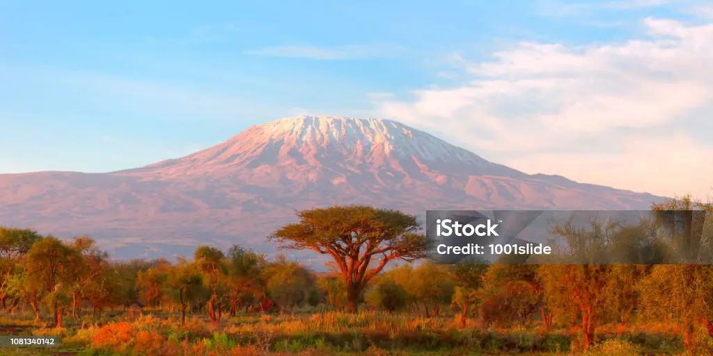

Tanzania Data
- Capital: Dodoma
- Largest City: Dar es Salaam
- Population: about 67 million
- Area: 945,087 km²
- Languages: Swahili and English
- Currency: Tanzanian shilling (TZS)
- Highest Point: Mount Kilimanjaro, 5,895 m
- Famous For: Serengeti, Zanzibar, Ngorongoro Crater and for the great and only mount Kilimanjaro
Weather
- Temperature: 24°C
- Conditions: Partly Cloudy
- Wind: 12 km/h
- Wind Chill: